Objective
The aim is to analyse an email and outline whether it is a phishing mail or not.
The analysis was conducted using the Windows Virtual Machine provided by LetsDefend, a cloud-based SOC training platform. This VM simulates a standard user workstation equipped with necessary tools for email analysis, such as Outlook, browser, and endpoint protection. It allows for a controlled and realistic environment to safely inspect suspicious emails, attachments, and links to determine if the email poses a legitimate threat.
Investigation steps
Opened the investigation channel and reviewed the details of the alert to understand a bit more of its nature such as type, time/date of event, addresses etc.
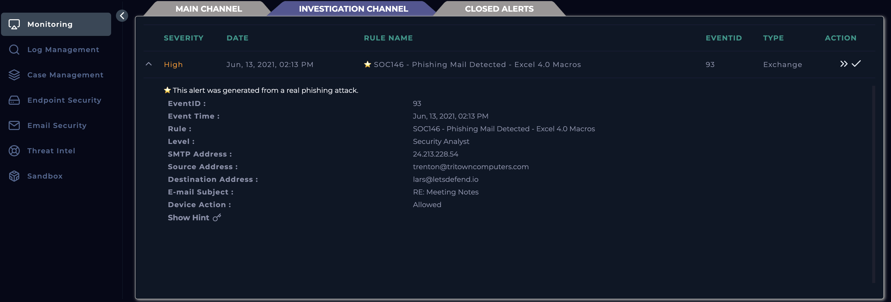
Created a case for the alert
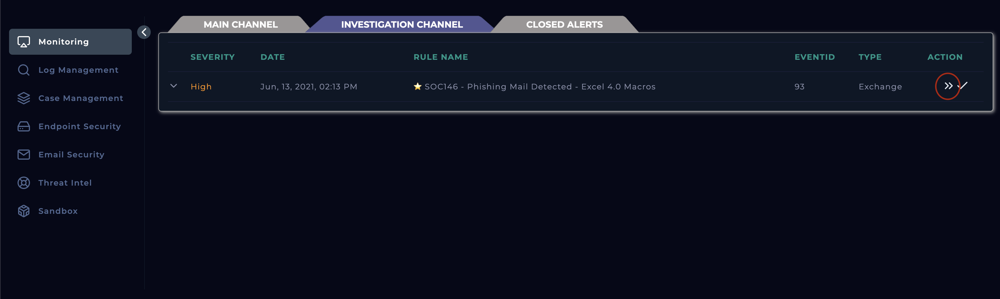
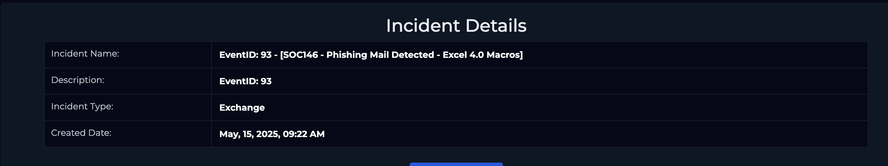
Opened case management and started the playbook to understand the instructions of handling the case
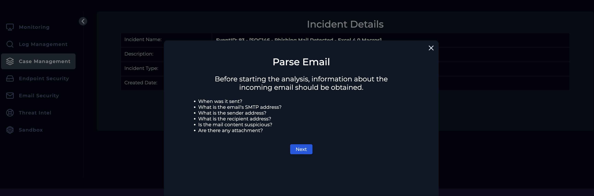
Navigated into the Email Security and searched for the From address mentioned in the alert and narrowed down results
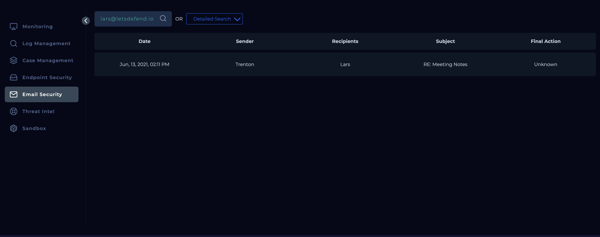
Reviewed the content of the email and identified the message was in bad English which is a potential indicator but cannot conclude anything from this.
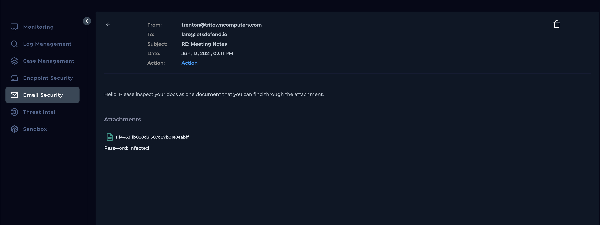
Navigated to VirusTotal and uploaded the Excel file which flagged by 39/61 vendors as malicious
Downloaded the attachment and unzipped the file which seems to contain a Excel file and two executable dll files.
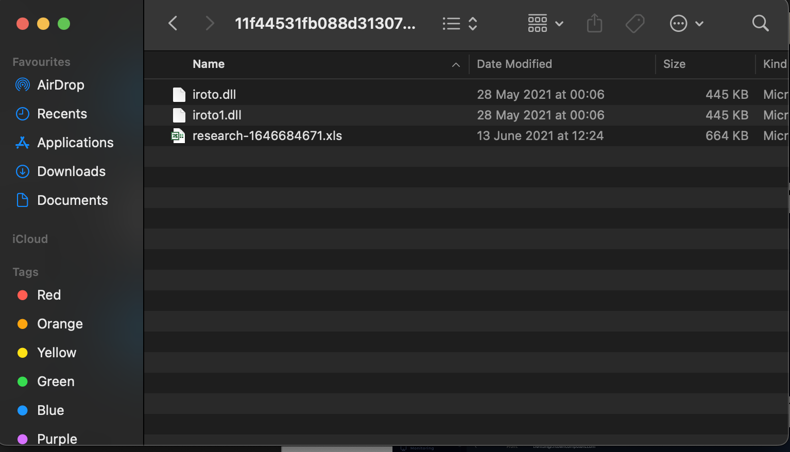
Navigated to VirusTotal and uploaded the Excel file, which was flagged by 39/61 vendors as malicious, but as the analysis was run 18 days ago, I requested to reanalyse, and this produced the same results. Doing the same for the other two dll files, it becomes as malicious too.
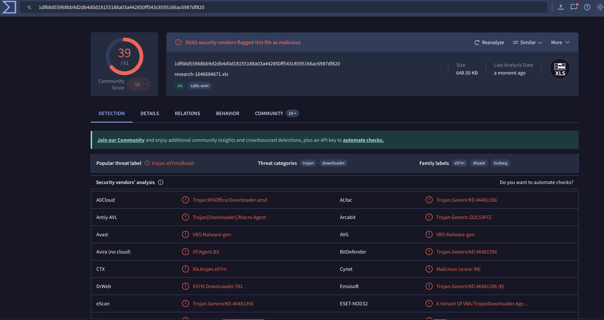
Found all the info needed from the alert itself in Monitoring, the email analysis conducted in Email Security, and using VirusTotal to analyse the file.
When was it sent? Jun, 13, 2021, 02:11 PM
What is the email's SMTP address? 24.213.228.54
What is the sender address? trenton@tritowncomputers.com
What is the recipient address? lars@letsdefend.io
Is the mail content suspicious? Yes
Are there any attachment? Yes
Within the playbook, selected Yes there was an attachment or URL as we could see a file attached to the email in the Email security module and confirmed the file is malicious.
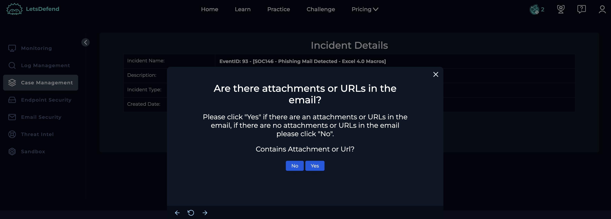
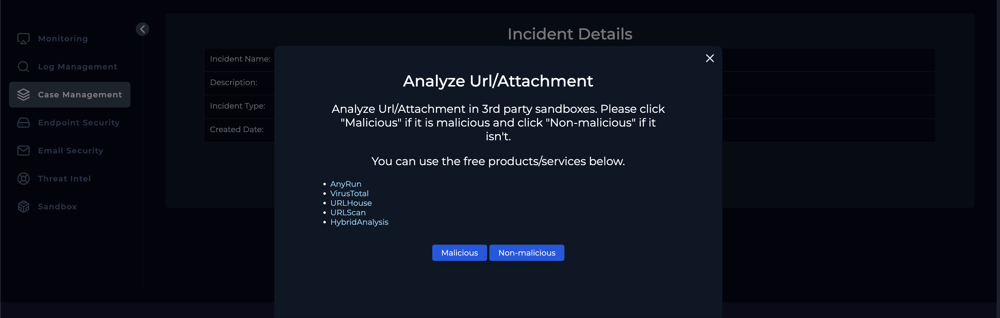
As the next part of the playbook, to check if the mail was delivered, I entered the alert from the Monitoring module and reviewed the Action attribute, which specified allowed meaning it was delivered.
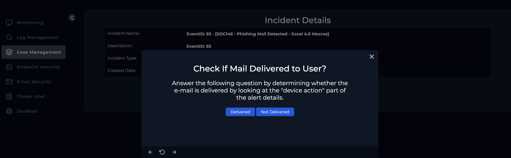
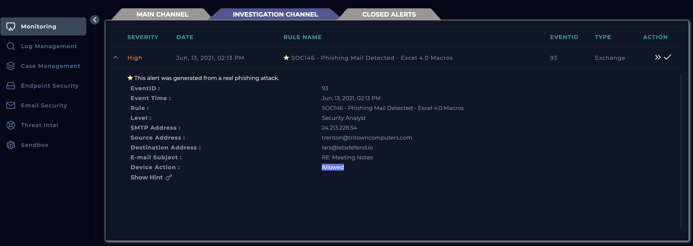
Deleted the email from the recipients inbox by clicking the delete button
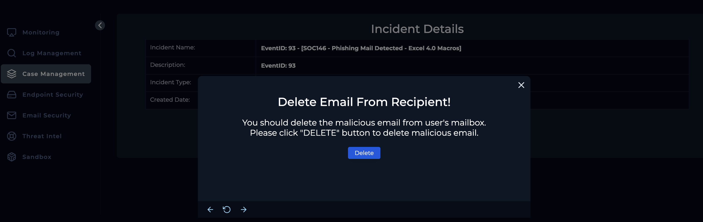
The next stage of the playbook requires confirming if anyone has opened the malicious file/URL and to do this, navigated into the EndPoint Security and identified Lars device in the network to identify the IP address
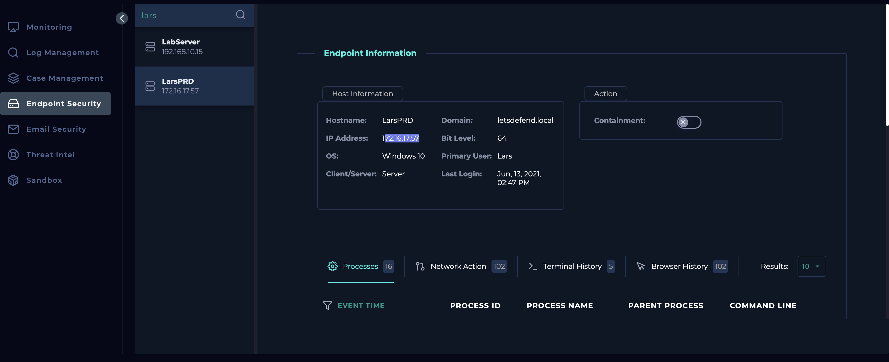
Headed over to Log Management and searched for the IP address under source address searched for Lar’s IP address and we got two results from 13/06. With close inspection I can see the two URLs mentioned in the log match the URL that was related to the malicious Excel file we previously identified, confirm the malicious fie was accessed
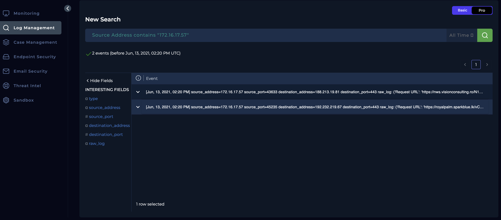
Reviewed results and identified it was a HTTP request trigger by excel.exe. Having these URLs, going back to Virus Total I can see the two URLs mentioned in the log match the URL that was related to the malicious Excel file we previously identified, confirming user accessing the file.
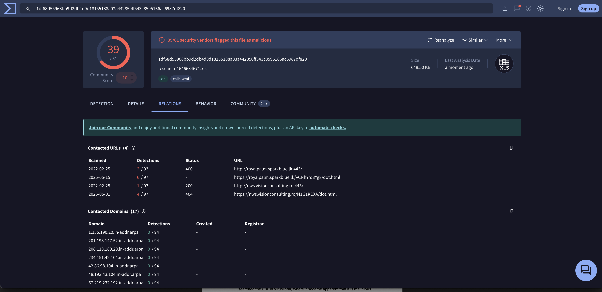
As the last stage of the playbook, to contain the endpoint, I navigated to Lar’s device in the Endpoint Security and selected Contain.
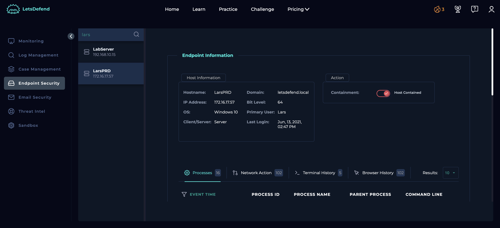
Analysis
During the investigation of a reported phishing incident, it was determined that the user had received a malicious email containing an Excel file attachment. Upon inspection, the Excel document was found to be macro-enabled, and the embedded VBA macros were configured to initiate HTTP requests to two known malicious URLs.
Log analysis and endpoint monitoring confirmed that the user opened the attachment, triggering the macros. As a result, network connections to the malicious sites were established, indicating successful execution of the payload. This led to a likely compromise of the user's device.
Given the severity of the incident, the affected device has been isolated from the network to prevent further propagation or data exfiltration. The device remains in containment while malware eradication and full forensic analysis are conducted to determine the extent of the compromise and ensure complete remediation.
Key learnings
- Gained hands-on experience in analyzing phishing incidents involving malicious email attachments, specifically Excel files with embedded VBA macros.
- Learned how macro-enabled documents can be used to execute automated HTTP requests to external malicious servers, leading to endpoint compromise.
- Strengthened log analysis and endpoint monitoring skills to confirm user interaction with the malicious file and detect outbound connections to threat actor infrastructure.
- Understood the importance of immediate containment measures, including isolating infected devices to prevent lateral movement and data exfiltration.
- Developed knowledge of incident response workflows, including malware eradication and forensic analysis to assess the full scope of compromise.
- Recognized the critical role of user awareness and email security controls in preventing successful phishing-based attacks.